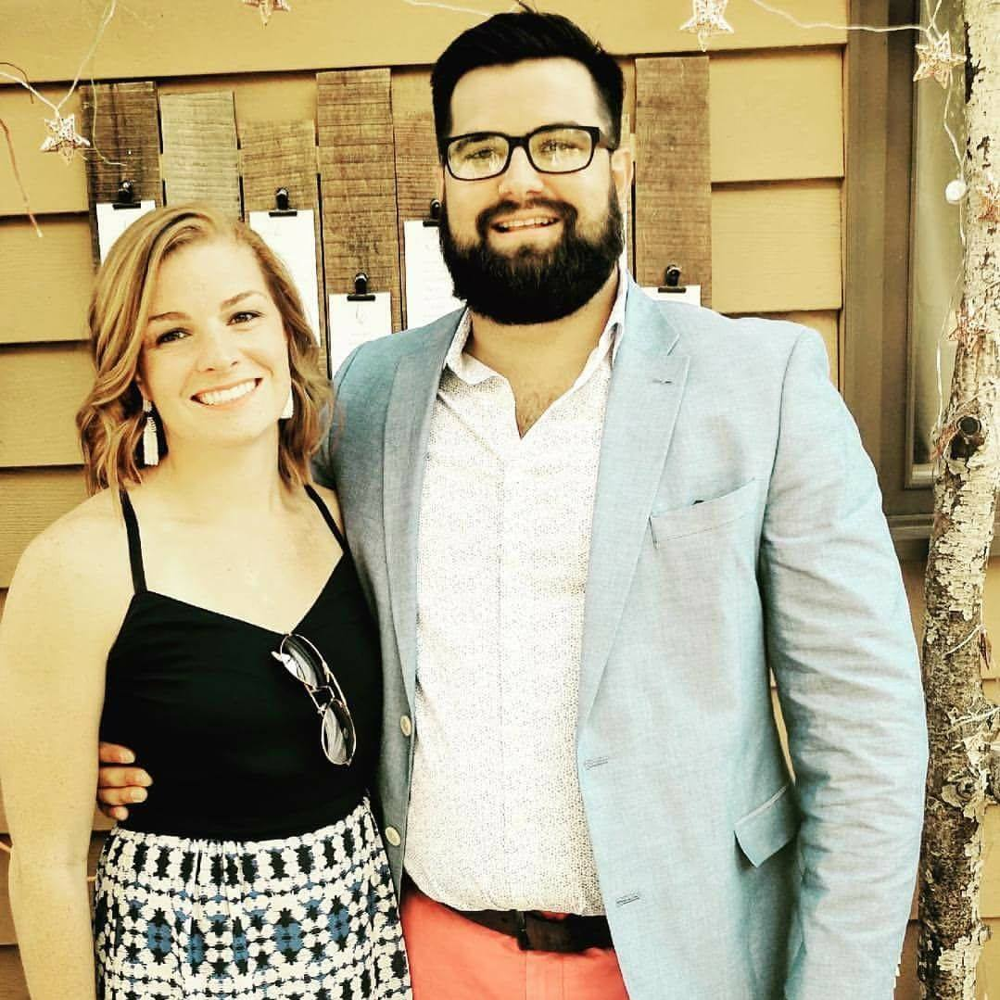

About Me
My name is Parker Browning and I moved down to Charlotte, NC with my wife, Claire, and dog, Kelly, from Cincinnati, OH. We were attracted to Charlotte due to the proximity to the beaches and mountains, which we both love, and for the calmer winters.
I graduated from Wittenberg University in Springfield, OH in 2012 with my Bachelor of Arts in Business Management, with a concentrate in Finance. During my undergraduate studies, I was a four year varsity swimmer and was elected team captain my senior year. After college, I began a career in sales, which led me to Charlotte, NC.
Once settling in Charlotte with my family, I discovered the Full Stack Web Development Bootcamp at UNCC. I have always had a passion for coding and web development, and was excited about the opportunity to dive into the program full time. Now that I have completed the program, I'm eager and ready to apply my passion and new skill set in this growing and fast-paced career. I invite you to look at the projects I have completed throughout the program.